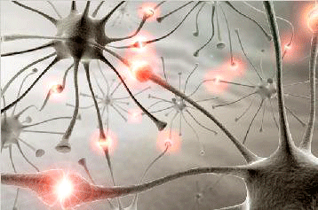
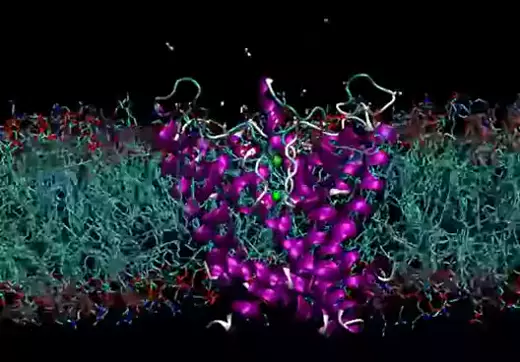

El Fascinante Mundo de los Canales de Iones: Las Puertas de la Percepcion
¿Por qué deberían importarnos los canales de iones?

Las neuronas pueden comunicarse entre sí, sin llegar a tocarse, por medio de las sinapsis,
las cuales pueden ser químicas o eléctricas . Todas nuestras funciones vitales dependen del correcto funcionamiento del sistema nervioso.
Los seres vivos deben entender el mundo que los rodea, para poder reaccionar adecuadamente a los cambios del entorno. Por ejemplo la percepción del frío,
el calor, el dolor, los colores, formas, texturas, olores, sabores, etc., y adaptar sus funciones como el latido del corazón, a las circunstancia del entorno.
A continuación puedes ver una excelente charla de divulgación de NAUKAS, una iniciativa de divulgacion cientifica que se raliza en españa, donde nos explican qué es el
sistem nervioso.
Es así como el sistema nervioso a través de sus conexiones eléctricas nos permite interpretar el mundo que nos rodea y detectar señales que podrían ser
nocivas para a vida así como otras placenteras, como el frío y el calor extermos, el dolor extermo, los malos o buenos olores, el sabor de los alimentos, las caricias o los golpes, etc.
En el primer paso en la percepción del mundo que nos rodea se encuentran los CANALES DE IONES.
Estos, funcionan como verdadersa "antenas" sensoras, que cuando sienten un cambio por ejemplo en la temperatura, abren un poro o túnel,
a través del cuál pasan selectivamente iones de distinta naturaleza, que convierten esos estímulos en señales eléctricas que pueden
ser interpretadas por nuestro cerebro. Los canales iónicos son estructuras altamente especializadas que contienen varios modulos sensores por ejemplo de voltaje, presion, temperatura,
hormonas, etc., que trás su activación permiten el paso de sodio, potasio, calcio, cloruro y otras macromoléculas, de manera selectiva.
Además, estas proteínas son fundamentales para mantener la conciencia del entorno, el ritmo cardiaco y el movimiento muscular.

Los mayores avances en el entendimiento de cómo funcionan los canales iónicos proviene del descubirmiento de las
toxinas presente en el veneno de serpientes, escorpiones, cienpiés y caracoles, entre otros animales. Estos venenos pueden paralizar
a las victimas de las mordeduras debido a que tapan el poro a través de los cuáles pasan esos iones, impidiendo que el sistema nervioso pueda
conectar órdenes con los músculos para escapar.
Sin embargo, las toxinas presente en los venenos de serpientes, escorpiones y caracoles, entre otros, han sido de gran relevancia para el desarrollo de la
biofísica y la biomedicina,
ya que si se usan en las cantidades adecuadas podrían ser útiles aliviar condiciones patológicas serias como el DOLOR.
Aunque hay que tener cautela ya que muchos de estos hallazgos están aún en fase de experimentación, y su mal uso puede ser perjudicial e incluso letal.
Para conocer mas presione sobre alguna de las imagenes o en el enlace debajo
Además, una serie de compuestos activos presente en diversos tipos plantas paradojicamente activan y bloquean ciertos canales iónicos, como aquelllos
que responden a la temperatura y que estan íntimamente relacionados al dolor, por lo que son foco de intensa investigacipon biomédica. Por ejemplo, el compuesto activo del ají,
también conocido como capsaicina es capaz de activar al mismo receptor que sensa el calor llamado TRPV1. Por otro lado, el compuesto activo presente en las hojas de la menta, conocido
como mentol, también activa al canal receptor de frío llamado TRPM8. Estos tipos de canales iónicos son también conocidos como thermoTRPs y son objeto de intensa investigación científica.
Mucho se ha hablado de los efectos analgésicos y anti-inflamatorios de ciertos tipos de fitocannabinoides presente en las flores de las plamntas de cannabis, que por cierto
se ha encontraddo que tambien tienen como blanco farmacológico canales del tipo thermoTRPs. Ahora bien, el uso de ungüentos en base a mentol, ha sido usado tradicionalmente
por la medicina ancestral para aliviar dolores articulares. Los parches dérmicos también hacen uso de estos compuestos como la capsaicina, ya que la exposicipon prolongada del canal
a estos principios activos provoca su cierre o bloqueo, siendo uno de los principales mecanismos anestésicos.
Escucha aquí la entrevista realizada en TXS radio a una experta en biofísica de canales iónicos que nos cuenta cómo funcionan los canales de temperatura y dolor
Finalmente, durante las últimas decadas se ha descubierto una serie de mutaciones en el genoma de humanos que afectan a distintos tipos de canales iónicos
y que pueden provocar diversas enfermedades, que en su conjunto se denominan canalopatías. Estas pueden ir desde enfermedades cardiacas
a neurológicas, así como musculo-esqueléticas, provocando parálisis, desmayos, dolor, etc., como en la ataxia, fibromialgia, esclerosis multiple y epilepsia, entre otras.
El tema ha alcanzado tal relevancia que en Netflix en la serie Diagnosis se describe los sintomas provocados por mutaciones en un famoso canal de potasio también conocido como BK o MaxiK,
que provoca condiciones serias de salud, y en el que la investigación de una connotada científica estadounidense fue clave para saber qué provocaba tan innvalidantes síntomas.
Puedes ver el episodio Aqui.